Linux学习笔记
约 6072 个字 34 行代码 预计阅读时间 21 分钟
Linux¶
1 Software License¶
- 什么是软件许可证（Software License）？
软件许可证是指开发者或版权持有人授予用户使用软件的一种法律协议。软件许可证规定了用户可以使用软件的方式以及使用软件的限制。通常情况下，软件许可证会规定软件的使用范围、使用期限、保证条款、责任限制、知识产权保护等方面的内容。
-
通过互联网收集国际上常用的各种软件许可证，并作简单的讨论和分析？
以下是一些国际上常用的软件许可证，以及它们的讨论和分析：
- GNU通用公共许可证（GPL）：该许可证是开源软件中最常用的许可证之一。它要求任何使用或修改软件的用户必须遵守GPL的条款，并且将衍生产品以GPL协议发布。这意味着使用或修改GPL软件的用户必须将他们的代码公开发布，以保持GPL的开源性质。GPL许可证有助于保护开源软件的自由和开放性，但对商业公司可能具有限制性，因为他们必须将他们的代码公开发布，这可能会影响他们的商业模式。
- BSD许可证：该许可证允许用户自由地使用、复制和分发软件，以及对软件进行修改和发布。该许可证要求在软件的衍生产品中包含原始软件的版权声明和许可证。BSD许可证对商业公司比较友好，因为它不要求衍生产品以相同的许可证发布。
- Apache许可证：该许可证允许用户自由地使用、复制、分发和修改软件。该许可证要求在软件的衍生产品中包含原始软件的版权声明和许可证，但不要求使用相同的许可证发布衍生产品。Apache许可证对商业公司比较友好，因为它不要求衍生产品以相同的许可证发布，同时也保护了原始软件的知识产权。
- MIT许可证：该许可证允许用户自由地使用、复制、分发和修改软件。该许可证要求在软件的衍生产品中包含原始软件的版权声明和许可证。MIT许可证对商业公司比较友好，因为它不要求衍生产品以相同的许可证发布。
-
重点研究Linux的软件许可存在哪些法律风险和应用风险？
Linux及其许多分发版使用了GNU通用公共许可证（GPL），这是一种开源许可证。根据GPL，任何人都可以自由地复制、分发或修改软件，但也存在一些限制。以下是一些可能的法律风险和应用风险：
法律风险：
-
许可证违规：GPL要求任何修改并发布的GPL许可软件，必须以GPL的形式发布源代码。如果一家公司或个人违反了这个规定，可能会面临法律诉讼。
-
代码所有权：在GPL下，软件中的每一部分都必须能够合法地采用GPL。如果某个组件的所有者不同意使用GPL，或者如果一个组件从未明确地采用GPL，那么使用或分发该软件可能会引起版权问题。
-
专利问题：虽然GPL尽可能地提供了对专利诉讼的保护，但是如果一个GPL许可的软件包含了侵犯第三方专利权的代码，使用、分发或修改该软件可能会导致专利纠纷。
应用风险：
-
软件质量和安全性：虽然许多开源软件的质量都非常高，但由于任何人都可以修改和分发软件，所以不能保证所有版本都有同样的质量和安全性。在使用开源软件时，一定要确保来源可靠。
-
技术支持和更新：与商业软件相比，开源软件可能没有同样的技术支持和定期更新。虽然有许多活跃的开源社区为软件提供支持和更新，但这并非总是能得到保证。
-
与其他软件的兼容性：并非所有软件都能与所有GPL许可的软件兼容。在选择和使用GPL许可的软件时，需要确保它能与你的其他软件和系统兼容。
-
2 帮助与说明¶
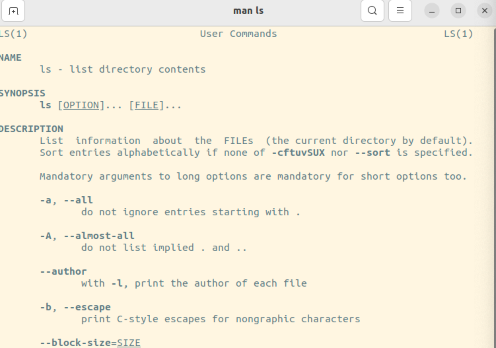
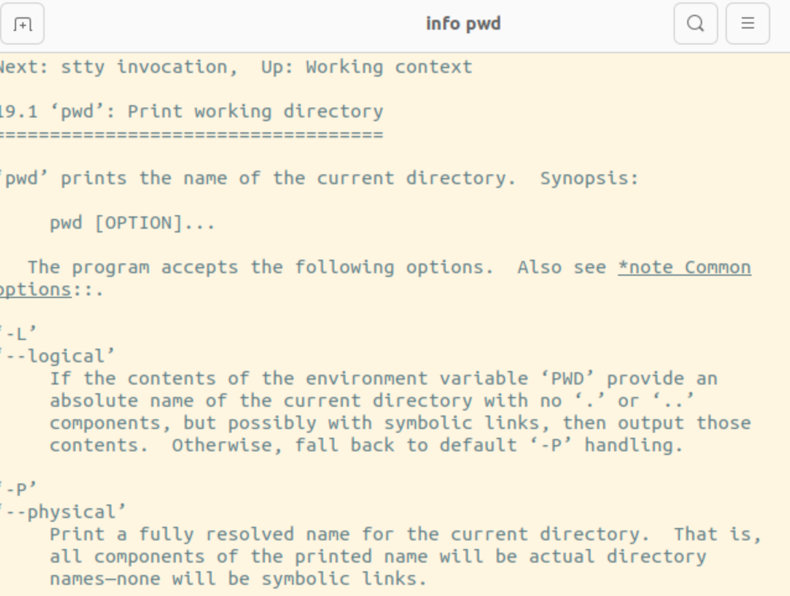
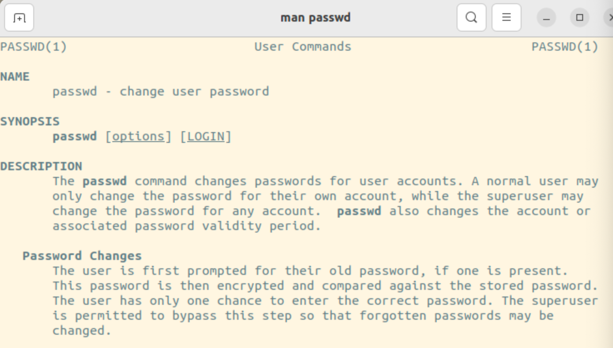
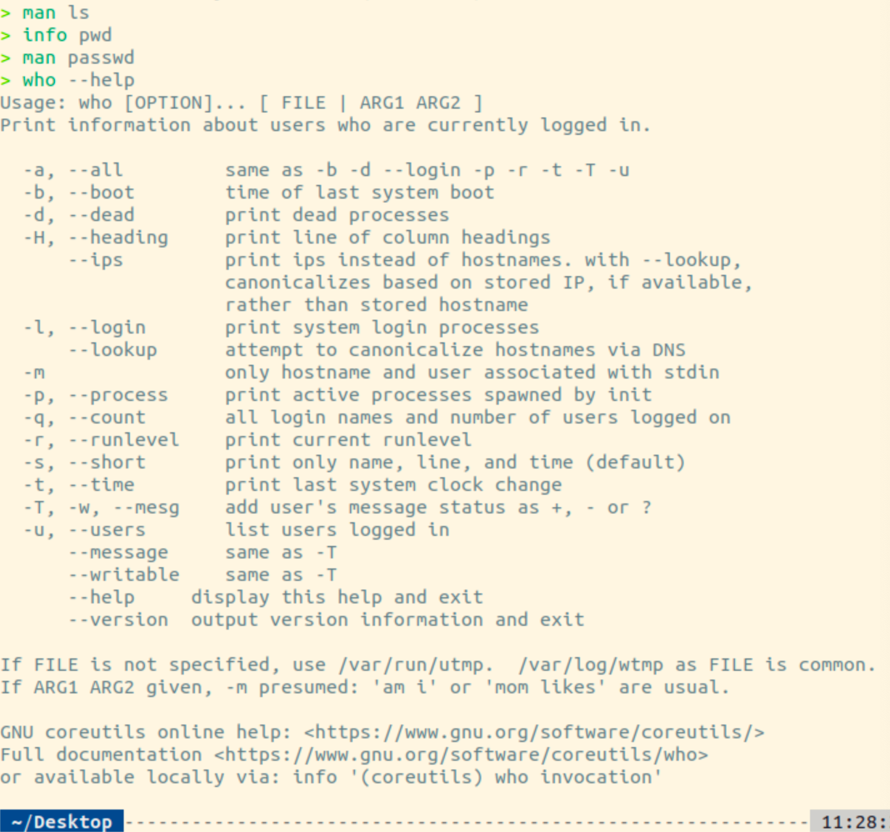
who –help指令的输出信息直接打印在控制台当前显示的区域上，而前面几条指令会刷新控制台显示区域再显示输出信息。
3 名字¶
- 用户名：howjul
- 操作系统名字：Linux
- 计算机系统域名：zhzs-ubuntu
- 计算机系统CPU：aarch64
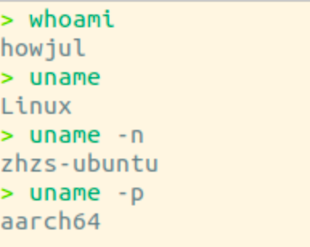
4 日历¶
-
Unix epoch，也称为Unix时间戳或者Unix时间，是指自1970年1月1日00:00:00 UTC以来的秒数。这个时间戳是Unix和类Unix操作系统中广泛使用的时间表示方式。在Unix系统中，时间戳被广泛用于记录文件的修改时间、访问时间和创建时间，以及其他需要记录时间信息的场合。时间戳的值是一个整数，表示自1970年1月1日00:00:00 UTC以来经过的秒数。Unix epoch被广泛使用的原因是它的简单性和可移植性。它不依赖于任何特定的时区或地理位置，因此可以在全球范围内使用。此外，它是一个整数，可以方便地进行比较和计算。
-
显示4年的日历：
$cal 4
显示1752年的日历：$cal 1752
显示2012年7月的日历：$cal 7 2012
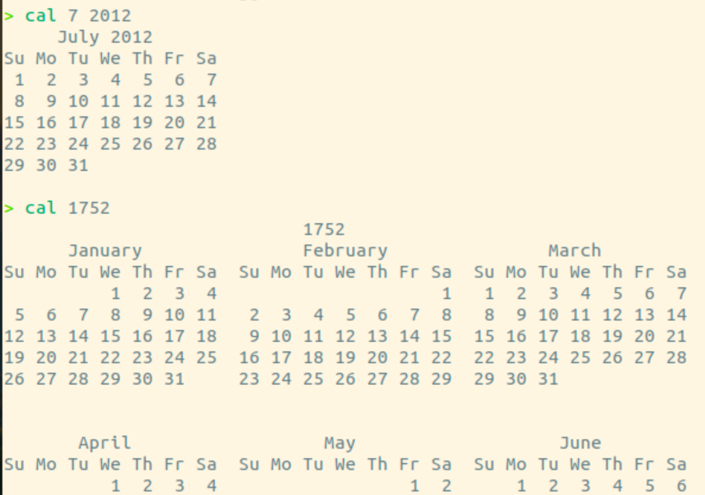
- 1752年只有355天。这是因为在当时的英国和其殖民地，包括美国，采用了格里高利历（Gregorian calendar）来代替儒略历（Julian calendar），并在1752年9月3日转换。在制定儒略历时，人们认为一年是365天多6个小时，所以该历法每4年设一个闰日来弥补每年少算的6个小时。然而地球围绕太阳一周的正确时间是365天5小时48分，所以儒略历并不太准确，使用时间越久误差越大， 而在转换为格里高利历的时候需要纠正这个误差。所以在转换的过程中，从1752年9月3日到9月13日这11天被直接跳过，没有使用。
5 时间¶
当前时间为11:33:22，系统已运行42min，当前登录1个用户，过去1min、5min、15min的负载分别为0.20、0.09、0.03。
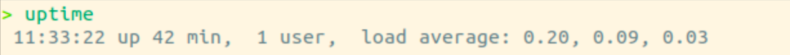
6 常用命令¶
| 命令 | 命令功能的简要描述 | 实例 |
|---|---|---|
| touch | 修改文件或目录的时间属性，若文件不存在则新建一个空文件 | touch hello.c |
| cp | 复制文件到指定文件或目录 | cp hello.c /zhz/ |
| mv | 修改文件或目录的名字，或将文件移入另一个目录 | mv hello.c hello1.c |
| rm | 删除文件或目录 | rm hello.c |
| mkdir | 创建文件夹 | mkdir hello |
| who | 查看系统当前有哪些登录中的使用者。用于显示系统中有哪些使用者正在上面，显示的资料包含了使用者 ID、使用的终端机、从哪边连上来的、上线时间、呆滞时间、CPU 使用量、动作等等。 | who -a |
| ls | 列出指定工作目录下的内容 | ls -s |
| cd | 切换当前目录 | cd ~ |
| pwd | 查看当前工作目录 | pwd |
| 命令 | 命令功能的简要描述 |
|---|---|
| open | 用于打开文件。函数原型：int open(const char pathname, int flags)或int open(const char pathname, int flags, mode_t mode)。打开外部文件。返回文件描述（file descriptor） |
| read | 从已打开的文件中读取数据。函数原型：ssize_t read(int fd, void *buf, size_t count)。从文件描述中读取指定大小的内容。 |
| write | 向已打开的文件中写入数据。函数原型：ssize_t write(int fd, const void* buf, size_t count)。向文件中写入指定大小的内容。 |
| close | 关闭文件。函数原型：int close(int fd)。关闭一个打开的文件描述。 |
| pipe | 建立管道。函数原型：int pipe(int pipefd[2])。生成一个单向的数据传输通道，用于进程之间的通讯。 |
| socket | 建立一个socket通信。int socket(int domain, int type, int protocol)。生成一个通讯的端点，并返回该端点的文件描述。用于进行网络中的进程的通信。 |
| mkfifo | 建立命名管道。格式：mkfifo [OPTION]... NAME...。对给定的名称，生成命名管道。可以用于进程之间的通讯。例如先用mkfifo创建一个命名管道：mkfifo pipe，然后在进程之间使用：proc1 > MyPipe，proc2 < MyPipe。 |
| system | 执行shell命令。函数原型：int system(const char *command)。用于执行shell命令。 |
| printf | 格式化输出数据 |
7 vim¶
1) 在shell提示符下，输入vim firscrip并按Enter键。vim的界面将出现在显示屏上；
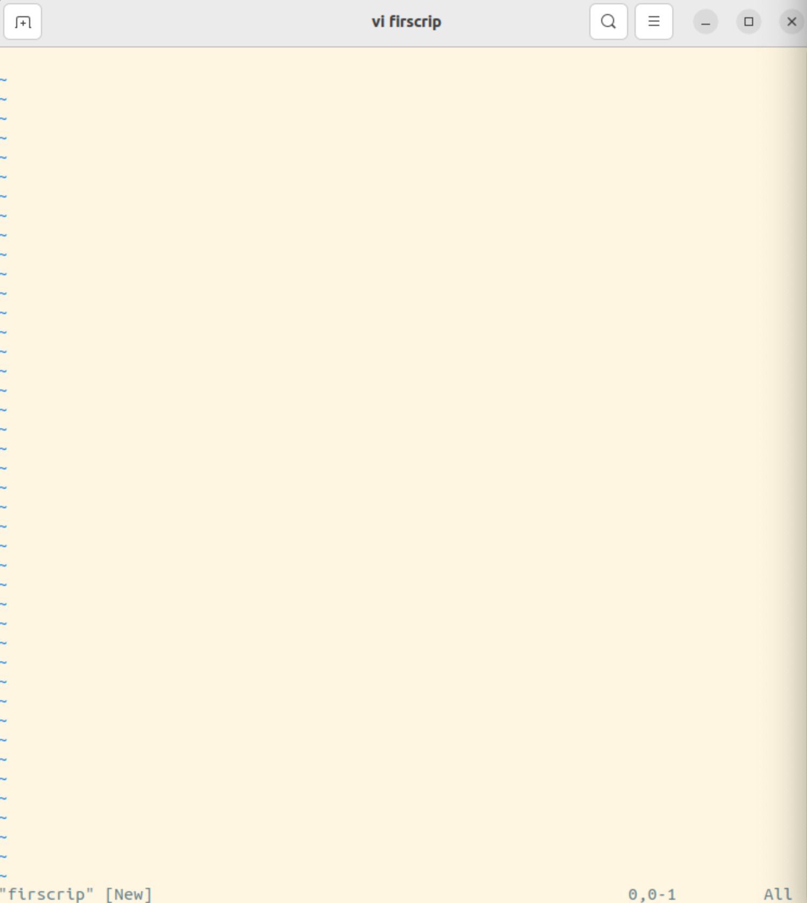
3) 按A键位，输入ls –la，并按Enter键；
4) 输入who，并按Enter键；
5) 输入pwd，再按Enter键。这时屏幕将如下图所示：
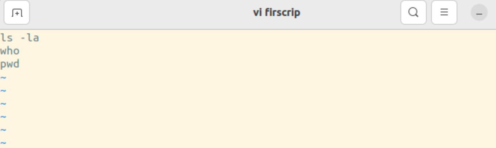
5) 再按Esc键；
6) 再输入:wq，并按Enter键； 7) 在shell提示符下，输入bash ./firscrip并按Enter键； 8) 观察结果。当前的工作目录中有多少个文件？他们的名称和大小？还有谁在使用你的计算机系统？当前的工作目录是什么？
当前的工作目录只有一个文件，.和..表示当前目录和上一级目录；他们的名称在最后一列，大小在第五列，单位是Byte；由倒数第二行知道当前是howjul用户在使用计算机系统；由最后一行可知当前工作目录为/home/howjul/Desktop。
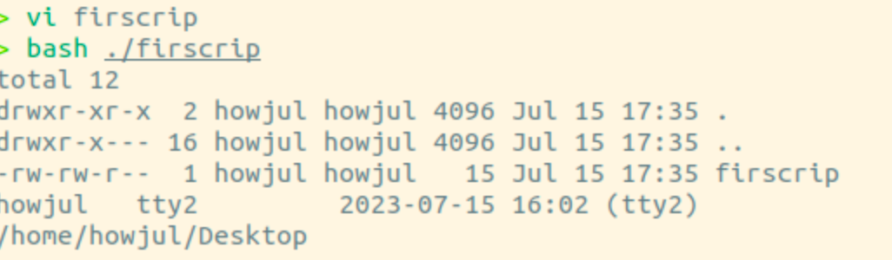
8 目录¶
创建如下目录树：
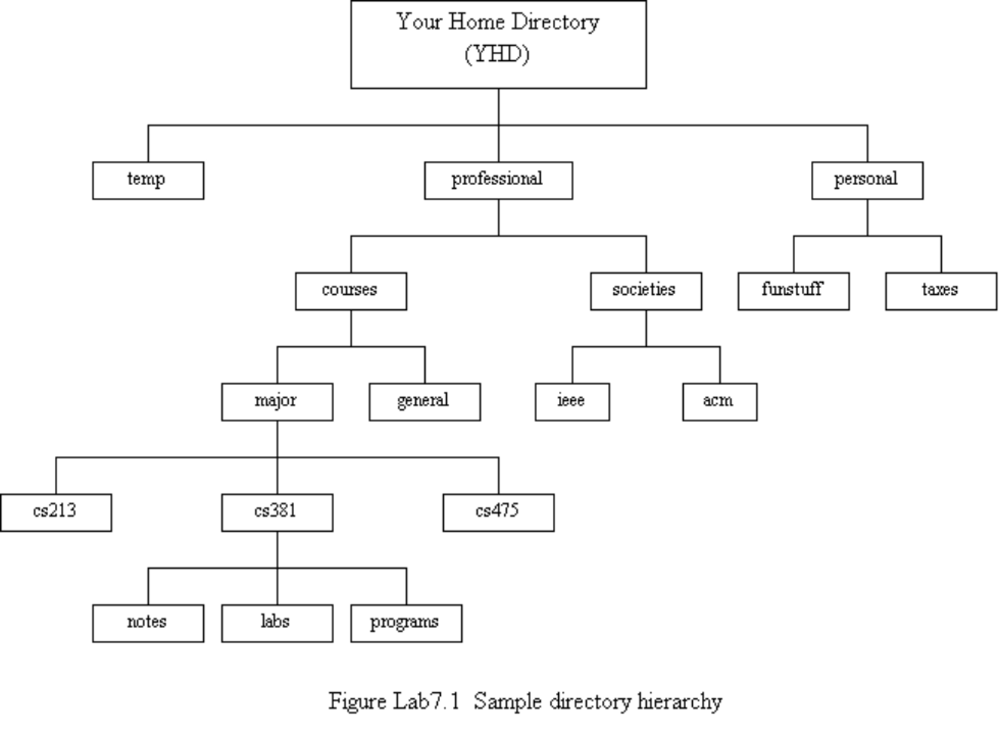
创建文件mkdir_tree，即vi mkdir_tree。
cd ~
mkdir temp
mkdir professional
cd professional
mkdir courses
cd courses
mkdir major
cd major
mkdir cs213
mkdir cs381
cd cs381
mkdir notes
mkdir labs
mkdir programs
cd ..
mkdir cs475
cd ..
mkdir general
cd ..
mkdir societies
cd societies
mkdir ieee
mkdir acm
cd ..
cd ..
mkdir personal
cd personal
mkdir funstuff
mkdir taxes
cd ..
bash ./mkdir_tree执行如上命令。tree temp professional personal进行验证，结果如下：
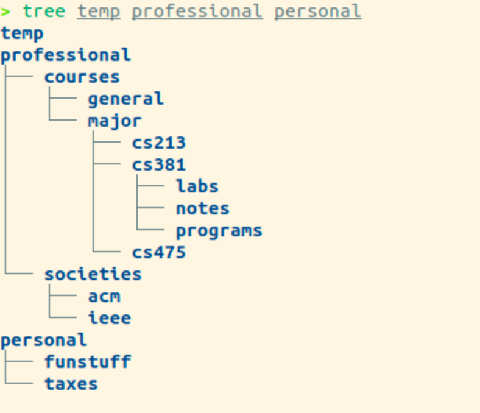
9 目录变换¶
在系统中，执行cd professional/courses命令，回答下列问题：
- 你的主目录的绝对路径是什么？给出获得该绝对路径的命令及命令输出。
主目录的绝对路径为/home/howjul。
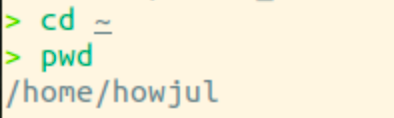
- acm目录的绝对路径是什么？
acm绝对路径是/home/howjul/professional/societies/acm。
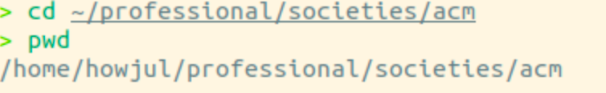
- 给出acm目录的两个相对路径。
执行cd professional/courses后，acm目录的相对路径可以是~/professional/societies/acm或者../societies/acm。
- 执行cd major/cs381/labs命令。然后执行一个命令显示当前目录的绝对路径，给出这个会话过程。
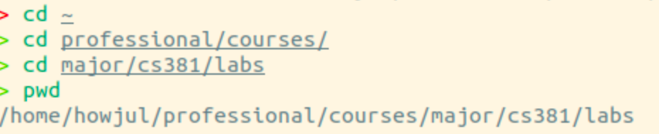
- 给出获得你的主目录三个不同的命令。
如下所示，可以先cd ~再pwd；或者echo ~；或者echo $HOME。
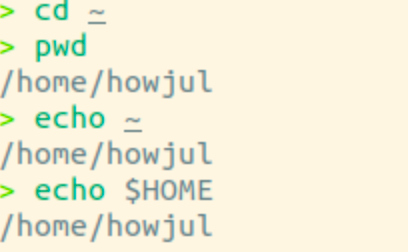
10 隐藏文件¶
Linux系统规定，隐含文件是首字符为“.”的文件，如.profile。在你的系统中的主目录下查找隐含文件，它们分别是哪些？
使用ls -a命令，列出主目录下的所有文件。如下图所示，高亮的为文件夹，灰色的为文件。
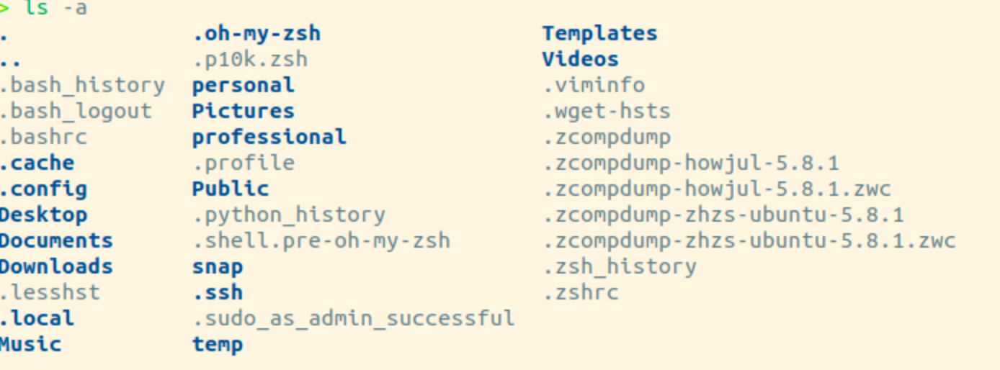
因此，隐藏的目录文件有：.oh-my-zsh，.cache，.config，.ssh，.local。隐含的普通文件就是如下输出的文件除去上面五个文件夹和指向自己和父文件夹的两个文件夹。
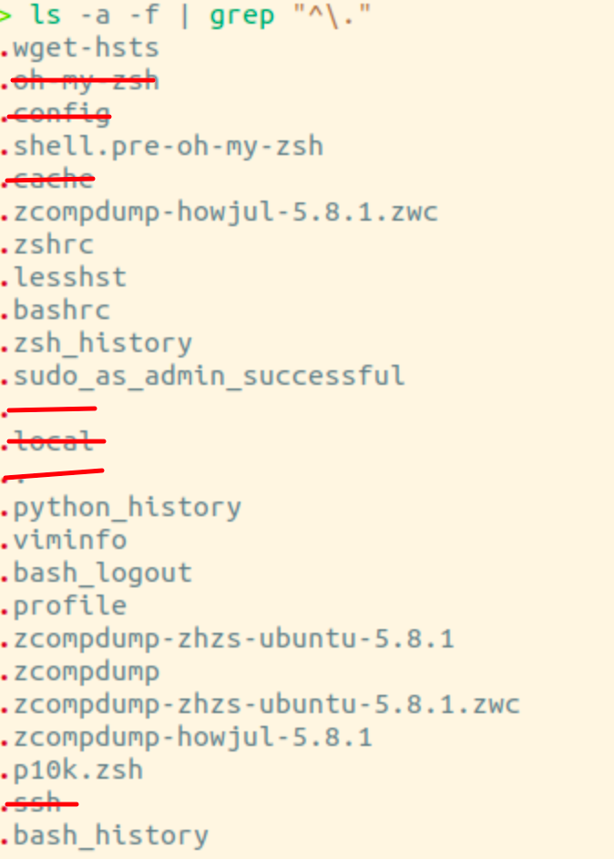
11 inode¶
下面这些目录的inode号是多少：/、你的主目录（home directory）、~/temp、 ~/professional、和~/personal? 写出会话过程。
使用命令ls -id / ~ ~/temp ~/professional ~/personal来查看各个目录的inode，结果如下图所示，灰色的即为inode号，高亮的为目录的绝对路径。
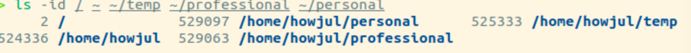
12 文件¶
在labs目录下，用文本编辑器创建一个名字为lab1的文件，文件的内容为：“Use a text editor to create a file called lab1 under the labs directory in your directory hierarchy. The file should contain the text of this problem. ”。回答下列问题：
vi lab1，进入文本编辑器，输入文本内容并保存。
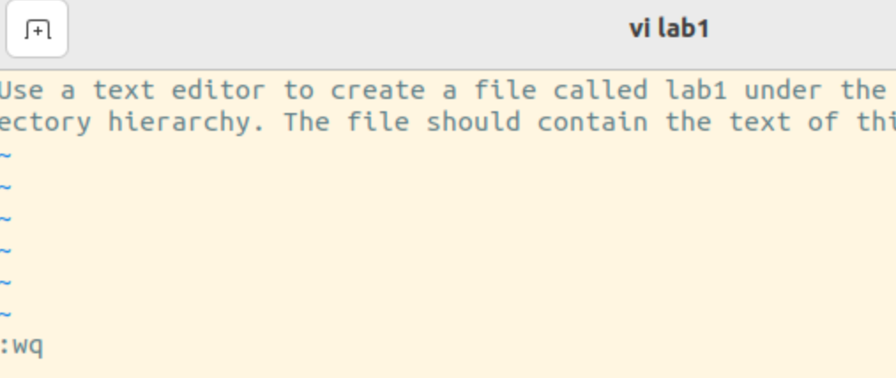
- lab1文件的类型，用Linux命令回答这个问题，给出会话过程。
使用stat lab1命令，文件的类型为普通文件。
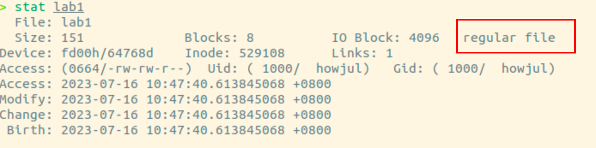
- lab1文件内容的类型，用Linux命令回答这个问题，给出会话过程。
使用file lab1命令，文件内容的类型为ASCII text。
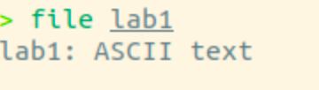
13 查找文件¶
在linux系统中，头文件以.h为扩展名。在/usr/include目录中，显示所有以t字母开头的头文件的名字。给出会话过程。
find /usr/include -type f -name 't*.h'，由于并没有t开头的头文件，所以以g开头的文件为例find /usr/include -type f -name 'g*.h'。
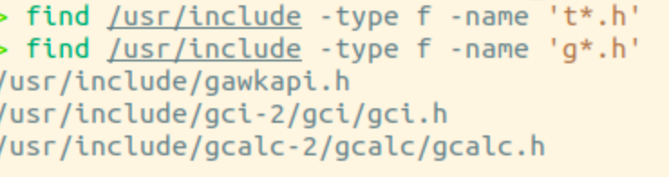
14 创建文件¶
创建几个大小不等的文本文件，供本实验和后面几个实验用：用man cat > mediumFile 命令创建中等大小的文件；用man bash >largeFile 命令创建一个大文件；再创建一个名字为smallFile关于学生数据的小文件，文件每行内容如下，第一行为各自段的含义，注意字段之间用tab符隔开。
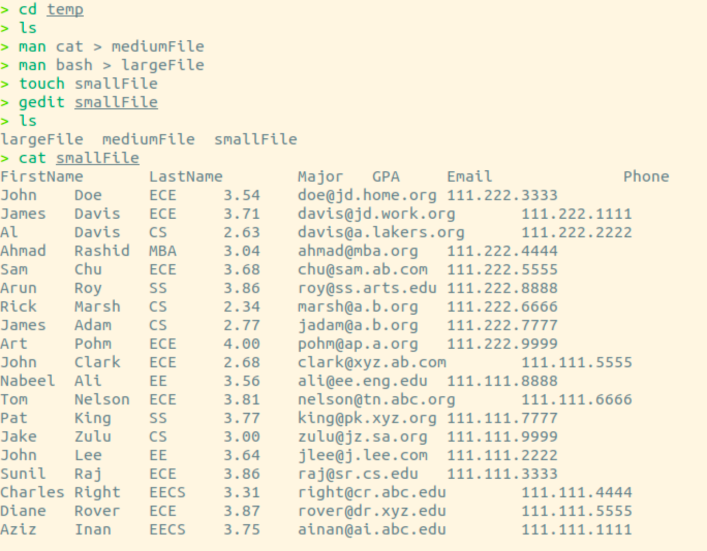
15 查看文件¶
显示largeFile文件的开始12行内容：cat largeFile | head -n 12
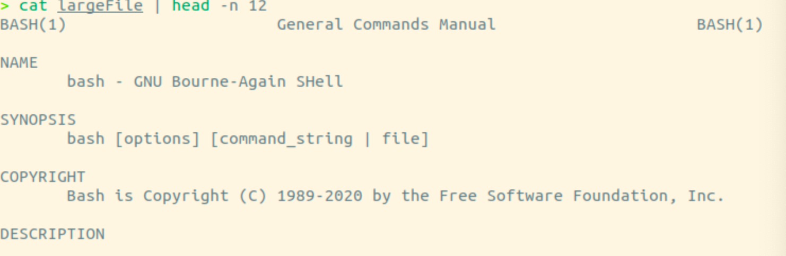
显示smallFile文件的最后5行内容：cat smallFile | tail -n 5
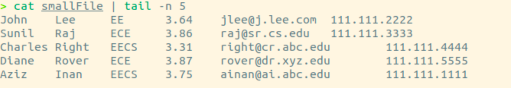
使用命令tail –n +6 smallFile显示smallFile文件从第6行开始到结束全部行
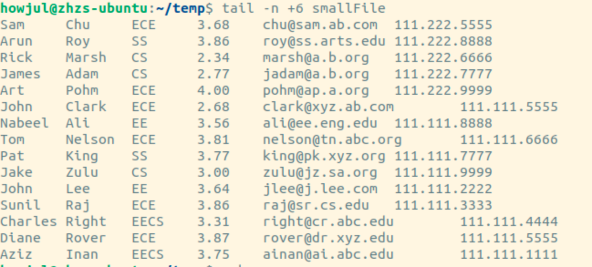
16 拷贝命令¶
使用cp命令，发现两个文件的修改时间并不相同。
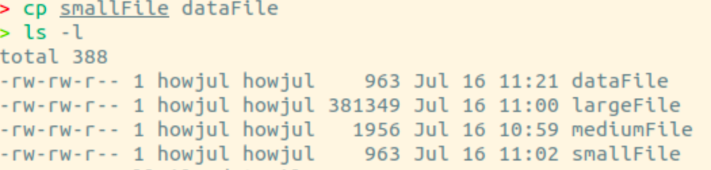
使用cp -p命令来保留修改时间，可以看到修改时间变得相同。
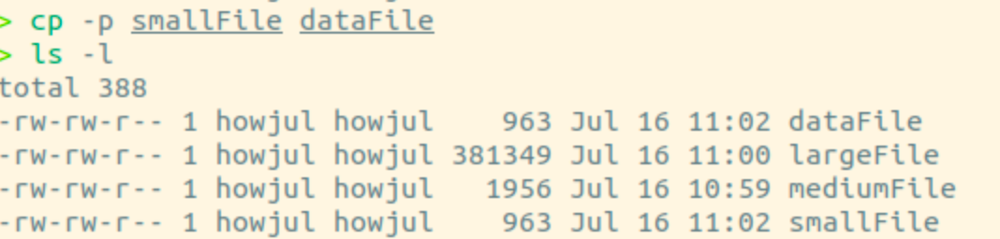
使用ls -i来查看文件的inode号，所以dataFile的inode号为529115，smallFile的inode号为529096。
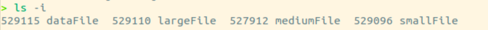
把文件名dataFile 改成newDataFile，文件newDataFile的inode为529115，inode号并没有改变。
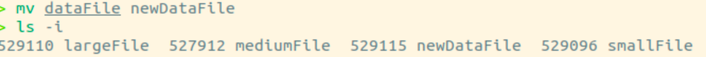
mv 命令是用来移动或重命名文件或目录的命令，该命令实际上并不修改文件的 inode 号，而是修改文件的路径或文件名。inode 号是文件系统中用来唯一标识文件或目录的标识符，因此 inode 号不会随着文件的移动或重命名而改变。文件系统中的所有文件和目录都是通过其 inode 号来访问的，而不是通过文件名或路径来访问的。当使用 mv 命令移动文件时，它实际上只是将文件的 inode 号与一个新的路径绑定起来，而不是创建一个新的文件或目录。因此，文件的 inode 号保持不变，只是文件的路径发生了变化。需要注意的是，而当使用 mv 命令重命名文件时，它也不会修改文件的 inode 号，因为文件的内容和属性没有发生变化，只有文件名发生了变化。
再把文件newDataFile移动到/tmp目录下，如下图所示，inode号仍然没有发生变化，原因仍然是上面那些。
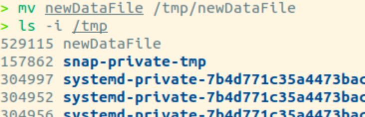
17 文件内容统计¶
在屏幕上显示文件smallFile、mediumFile、largeFile和/tmp/newDataFile的字节数、字数和行数。smallFile和/tmp/newDataFile文件应该是相同的。你能用其它命令给出这些文件的字节数的大小吗？什么命令。给出会话过程。
如下图所示，第一列为行数，第二列为字数，第三列为大小，可以发现smallFile和newDataFile是相同的。
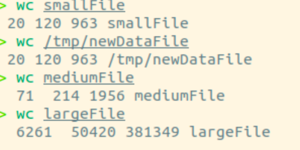
如下图所示，使用stat指令也可以给出这些文件的字节数大小。
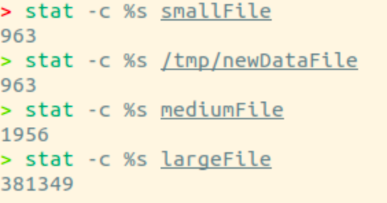
18 查找文件¶
搜索你的主目录，找到所有的HTML和C程序文件（文件有.html、.htm或.c扩展名。如果没有这类文件，可以用touch等命令生成一些这样的文件），显示符合要求的文件路径和文件名。给出你的会话。
如下图所示，使用find命令来进行查找即可。
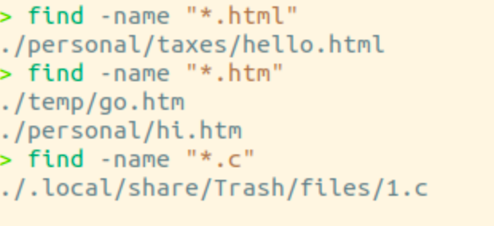
19 查找文件¶
给出一条命令，在主目录下显示所有文件内容中包含字符串“Linux”的文件名。
grep -rl "Linux" ~/，在这个命令中，-r 选项用于递归搜索子目录中的文件，-l 选项用于只输出包含匹配字符串的文件名。由于找到的文件较多，所以仅展示部分内容。
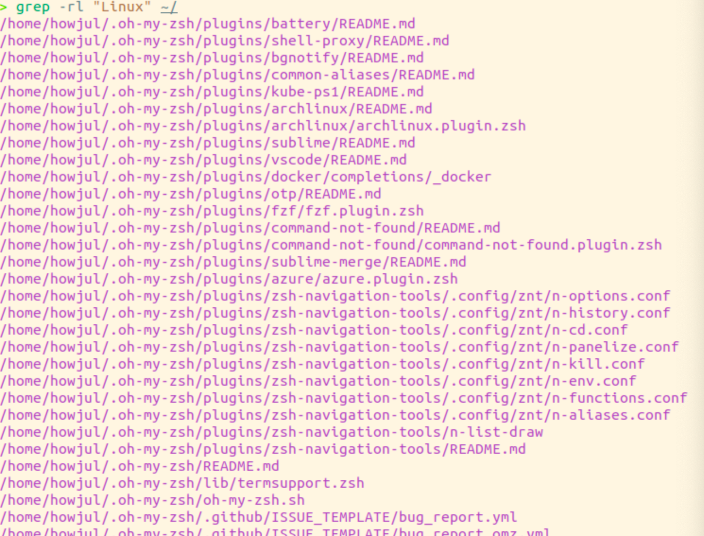
查看第一、三个文件进行验证：
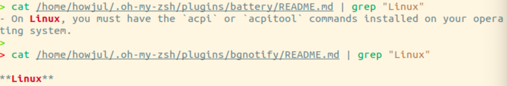
20 文件属性¶
在你的系统中有文件或目录分别是：/ 、/etc/passwd 、/bin/df 、~。用长列表格式显示这些文件或目录，并填写下列表格。
ls -dl 命令用于以长列表格式显示指定的目录或文件的详细信息，并且不显示目录或文件中的文件内容。
ls -dl / /etc/passwd /bin/df ~
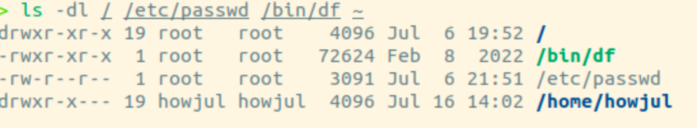
| 文件 | 文件类型 | 存取权限 | 链接数 | 所有者 | 组 | 文件大小 |
|---|---|---|---|---|---|---|
| / | 目录文件 | rwxr-xr-x | 19 | root | root | 4096 |
| /etc/passwd | 普通文件 | rwxr-xr-x | 1 | root | root | 72624 |
| /bin/df | 普通文件 | rw-r- -r- - | 1 | root | root | 3091 |
| ~ | 目录文件 | rwxr-x- - - | 19 | howjul | howjul | 4096 |
21 权限¶
在你的主目录中的temp、professional和personal三个子目录，设置使自己（owner）拥有读、写、执行3种访问权限，设置其它用户只有读和执行权限。在~/temp目录下创建名为d1、d2和d3的目录。在d1目录下，用touch命令创建一个名为f1的空文件。给出d1、d2、d3和f1的访问权限。给出完成这些工作的会话。
使用chmod来修改权限
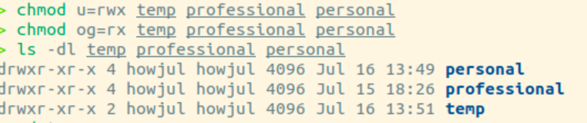
进行相关的操作
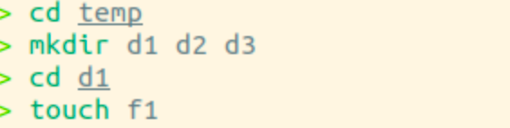
给出d1、d2、d3和f1的访问权限：d1、d2、d3都是rwxrwxr-x，f1是rw-rw-r- -。
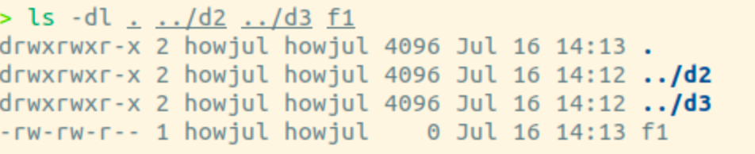
22 操作权限¶
设置当前目录为你的主目录， 设置文件~/temp仅为执行权限， 然后执行ls -ld temp，再执行ls -l temp命令。结果如何？成功执行ls -l temp命令需要的最小权限是什么？请设置temp目录的最小权限，然后再一次执行ls -l temp命令。给出这个过程的会话。注意：做这个实验不能使用root用户登录系统。
如下所示，ls -ld可以查看结果，但是ls -l权限不够
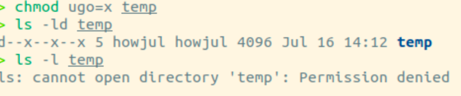
成功执行ls -l temp命令需要的最小权限是同时拥有读和执行权限
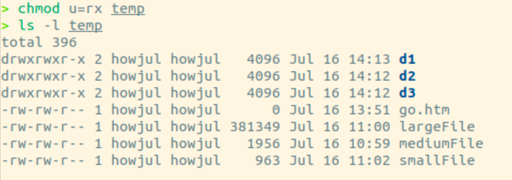
23 umask¶
用umask命令显示当前的掩码。把你的主目录设置为当前目录，然后在~/temp/d1目录下，创建d11目录，用touch命令创建f2空文件。
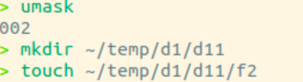
在temp目录下用编辑器创建hello.c文件并写入指定内容。
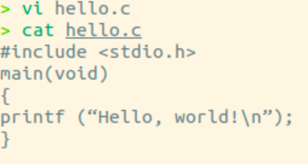
再运行命令gcc –o greeting hello.c ，生成了可执行文件greeting。
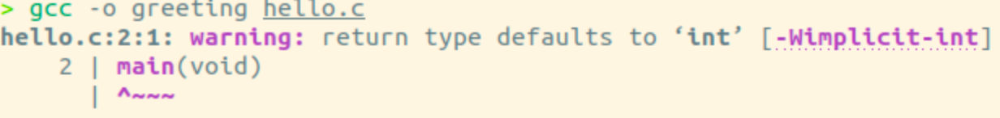
长列表显示f2、 hello.c、greeting和d1文件访问权限。
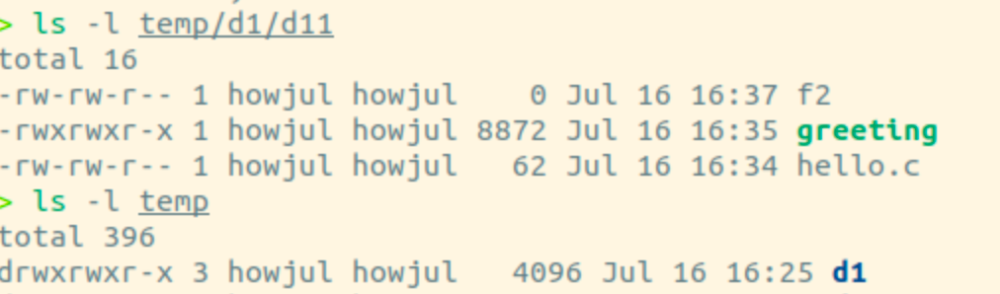
把掩码（mask）设置为077，在目录~/temp/d2下，创建d21目录，用touch命令创建f2空文件。长列表显示f2、 hello.c、greeting和d21文件访问权限。最后根据掩码的不同填写下列表格。
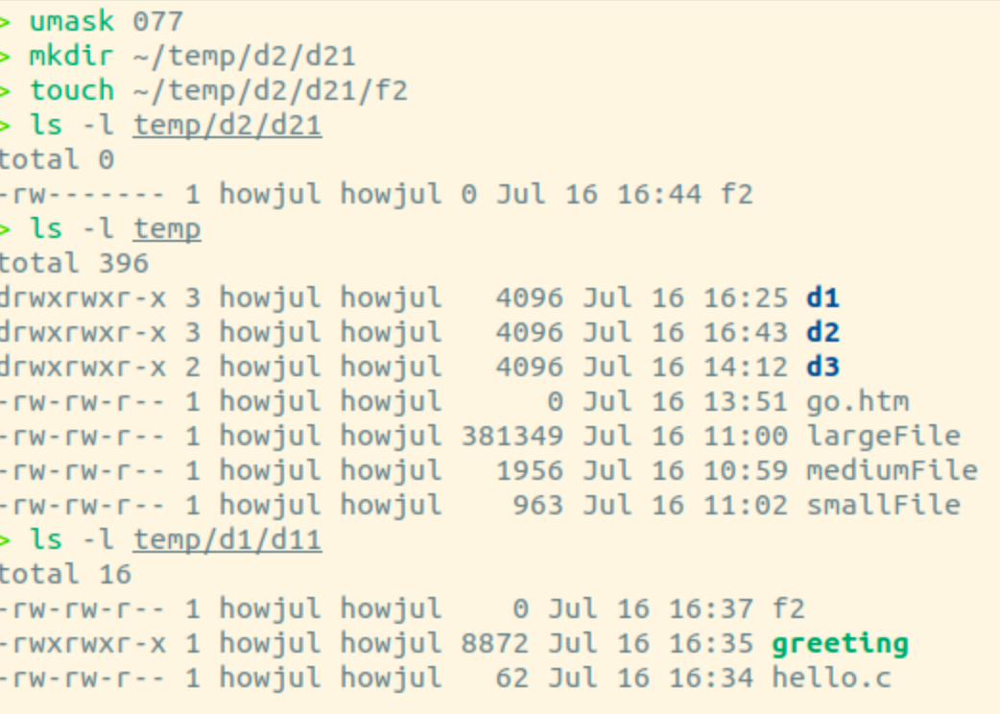
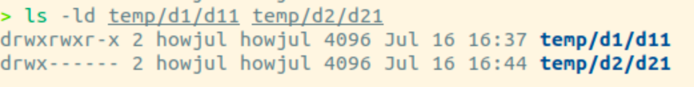
| umask值 | 文 | 件 | 权 | 限 |
|---|---|---|---|---|
| f2 | hello.c | greeting | d11/d21 | |
| 002 | r w - r w - r- - | r w - r w - r - - | r w x r w x r - x | r w x r w x r - x |
| 077 | r w - - - - - - - | r w - r w - r - - | r w x r w x r - x | r w x - - - - - - |
gcc是c语言的编译器。在Linux系统中执行文件和目录的缺省权限是777，文本文件的缺省权限为666。
24 硬链接¶
在~/temp目录下创建名为d1、d2和d3的目录。把文件smallFile拷贝到d1目录下，长列表格式显示文件smallFile，显示的内容包括inode号、访问权限、硬链接数、文件大小。
inode号为529076，访问权限为r w - r w - r - -，硬链接数为1，文件大小为963字节。
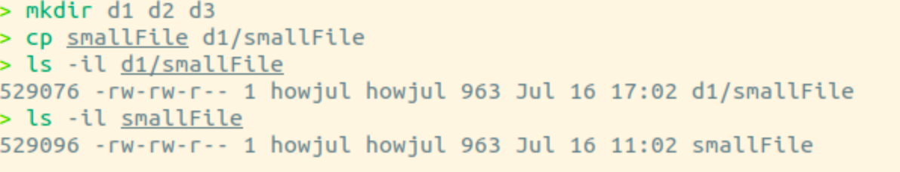
25 硬链接¶
在~/temp目录下，把当前目录改变成d2。创建一个名字为smallFile.hard硬链接到d1目录下的smallFile文件。长列表格式显示smallFile.hard文件，与smallFile文件的属性进行比较。你如何确定smallFile和smallFile.hard是同一文件的两个名字，是链接数吗？
smallFile和smallFile.hard的inode都是529096，所以他们是同一个文件的两个名字（不是因为链接数确定同一文件），当然我们也可以看到硬链接数增加为2。
26 硬链接¶
使用硬链接文件smallFile.hard显示smallFile文件的内容。然后取消你本人对smallFile文件读（r）权限，再显示文件的内容，发生了什么？根据以上练习，你能推断出什么？对smallFile文件增加读权限，再一次显示文件内容，发生了什么？最后作一个smallFile文件的备份，并删除smallFile文件，用smallFile.hard显示smallFile文件内容，又发生了什么？请你解释一下练习过程中的现象。
使用硬链接文件smallFile.hard显示smallFile文件的内容
然后取消你本人对smallFile文件读（r）权限，再显示文件的内容，硬链接只是文件的一个别名，因此取消了smallFile文件的读权限之后，我们也没有权限去读smallFile.hard，因为这两个文件的实质都是在对同一个inode进行操作。
对smallFile文件增加读权限，再一次显示文件内容，发现我们可以读取smallFile.hard，原因和之前是一样的。
作一个smallFile文件的备份，并删除smallFile文件，用smallFile.hard显示smallFile文件内容
只有当某个inode的所有硬链接都删除，也就是没有一个指针指向inode之后，inode和它所对应的数据才会被删除，而现在还有smallFile.hard指向这个inode，所以我们仍然可以正常读取出内容。
27 软链接¶
恢复/temp/d1/smallFile文件。创建一个名字为~/temp/d2/smallFile.soft软链接到~/temp/d1/smallFile文件。长列表格式显示smallFile.soft文件，比较这两个文件的属性。你如何确定smallFile 和smallFile.soft是两个不同的文件？是这两个文件的大小吗？
操作如下图所示，可以看到smallFile.soft的文件大小为9字节，而且权限位的第一位是l而不是-，这说明这不是一个普通的文件。当然确定这两个文件是不同的文件最终还是要落脚在inode号上，smallFile.soft的inode和smallFile的inode分别为529122和529124，由于inode号不同，所以这是两个不同的文件。我们不能通过这两个文件的大小来判断。
将当前目录转成d2，
28 软链接¶
使用软链接文件smallFile.soft显示smallFile文件的内容。然后取消你本人对smallFile文件读（r）权限，再显示文件的内容，发生了什么？根据以上练习，你能推断出什么？对smallFile文件增加读权限，再一次显示文件内容，发生了什么？最后作一个smallFile文件的备份，并删除smallFile文件，用smallFile.soft显示smallFile文件内容，又发生了什么？请你解释一下练习过程中的现象。
使用软链接文件smallFile.soft显示smallFile文件的内容
然后取消你本人对smallFile文件读（r）权限，再显示文件的内容，
因为修改了smallFile的权限，导致软链接也无法读取，这一步与硬链接相同
对smallFile文件增加读权限，再一次显示文件内容，发现文件内容又可以被读取了，因为读权限又开放了
最后作一个smallFile文件的备份，并删除smallFile文件，用smallFile.soft显示smallFile文件内容，发现无法找到对应的文件
原因是，软链接只是存储了一个指向文件的指针，而当smallFile被删除，硬链接数置零，smallFile所占用的存储空间也被释放，所以当再用软链接去寻找的时候，那一块存储空间已经被释放了，所以找不到他原来所指向的文件。
29 进程¶
在你使用的Linux系统中，有多少进程在运行？进程init(或systemd)、bash、ps的PID是多少？init、bash和ps进程的父进程是哪一个？这些父进程的ID是什么？
当前有299个进程正在运行（包括ps进程本身）
进程init的pid为1父进程pid为0，进程bash的pid为10190父进程pid为10125，进程ps的pid为10196父进程pid为10190，
init进程没有父进程，进程bash的父进程是zsh，因为我就是通过zsh来打开的bash，而ps的父进程就是bash。
如果我们再进行查看，可以发现zsh的父进程是一个名叫gnome-terminal的进程。
30 进程¶
linux系统中，进程可以在前台或后台运行。前台进程在运行结束前一直控制着终端。若干个命令用分号（；）分隔形成一个命令行，用圆括号把多个命令挂起来，他们就在一个进程里执行。使用“&”符作为命令分隔符，命令将并发执行。可以在命令行末尾加“&”使之成为后台命令。 请用一行命令实现以下功能：它1小时（实验中可以用1分钟代替）分钟后在屏幕上显示文字“Time for Lunch!”来提醒你去吃午餐。
直接用分号隔开用zsh来运行，这样60s后就会打印出结果，但在过程中zsh不能运行其他指令
而若是使用&结尾，则会创建另一个进程和zsh并行执行，在这个过程中zsh可以处理其他指令，一分钟后同样可以看到结果
31 并发执行¶
写一命令行，使得date 、uname –a 、who 和ps并发执行。给出会话过程。
32 先后执行¶
写一命令行，先后执行date 、uname –a 、who 和ps命令，后面3个命令的执行条件是：当只有前面一个命令执行成功后，才能执行后面一个命令。给出会话过程。
33 pwd¶
如下图所示，由于当前目录在主目录下，所以第一个pwd打印出主目录的绝对路径。这时我们打开另一个bash，进入/usr，所以第二个pwd时候我们输出/usr。之后我们退出shell，又回到了主目录，所以第三个pwd打印的结果是主目录的绝对路径。
34 重定向¶
搜索并显示你主目录下foobar文件的绝对路径，错误信息重定向到/dev/null中。给出你的会话。（提示：若没有foorbar文件，可以创建一个）
如果找到了名为 foobar 的文件，它将输出该文件的绝对路径。如果找不到该文件，则不会有任何输出，然后将错误信息重定向到 /dev/null 中
35 重定向¶
搜索你主目录下foobar文件，保存它的绝对路径到foobar.path文件中，错误信息写到/dev/null中，再显示foobar.path文件的内容。给出会话过程。
36 重定向¶
cat程序（命令），输入从标准输入设备中读入，输出送到标准输出设备中。现在运行这个程序，要求输入从student.records中读入，输出结果重定向到output.data文件中，错误重定向到error.log文件中。用一条命令来实现上述过程。
cat 0<student.records 1>output.data 2>error.log
37 重定向¶
写出一个命令将shell的标准输入（stdin）更改到当前目录下名为fdata文件，标准输出（stdout）更改到当前目录下名为fout的文件。如果fdata文件包含下面的内容，那么在命令执行后会发生什么？
echo –n “The time now is:”
date
echo –n “The users presently logged on are:”
who
首先创建并填入fdata的内容。
然后在zsh中打开bash，运行exec 0<fdata 1>fout，bash按照预期运行完后自动退出，此时在zsh中cat fout可以验证实验按预期进行。
38 管道¶
计算命令ls -l的输出中的字符数、单词数和行数，并把它显示在显示器上。给出命令和输出结果。
如下图所示，指令为ls -l | wc，行数为13，单词数为110，字符数为648。
39 统计文件¶
在/bin目录下有多少个普通文件、目录文件和符号链接文件？如何得到这个答案？
如下图所示，利用find命令来递归查找文件，普通文件有1375个，目录文件有1个，符号链接文件有259个。
本文总阅读量次